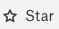

API Resource Cataloging¶
Available from version V R2 (5.6.x) - Beta
Alation provides the ability to add API resources to the Catalog and document them alongside the other catalog objects. Adding API resources to Alation can help collect information on useful API endpoints in one place, organize them into a convenient-to-use folder structure, describe their benefits or caveats using Catalog fields, and make that information accessible to all Catalog users.
With API resources added to the Catalog, analysts can easily discover the APIs available to them and understand how they can be leveraged to get datasets.
The API Resource object in Alation is a “segment” of data at a server endpoint that is available to analysts and that is stored in Alation as a structured metadata object.
Important
This feature requires pre-configuration.
Enabling API Resource Cataloging¶
To enable API Resource cataloging,
SSH to your Alation server.
Enter the Alation shell:
sudo /etc/init.d/alation shell
Using alation_conf, set the flag
alation.feature_flags.enable_api_resourcetoTrue:alation_conf alation.feature_flags.enable_api_resource -s True
Restart the Alation server to apply the change:
alation_action restart_alationExit the Alation shell:
exit
Adding API Resource Objects to the Catalog¶
API Resources can be added to the Catalog using the API Resource API.
The API Resource API allows you to add, update, delete, and retrieve existing API Resources. For the details on this API, see the corresponding API documentation: API Resource API.
Locating API Resources in the Catalog¶
To find API Resources in the catalog:
Use the Search field. If you know the title of the API Resource you are looking for, start typing it. The search results will update dynamically to show the objects that fit your search query.
To browse the available API Resources, click the More Types… filter on the Search page, and in the list of object types, click any of the available API Resource object types. Alation will search for objects in this set.
To view the Catalog page for a specific API Resource, click its title in the Search results.
Click Apps on the main toolbar and then click Sources. On the Sources page > Browse Sources tab, click API Resources to open the list of API Resources currently available in the Catalog. To view a specific API Resource folder, click its name in this list.
API Resource Catalog Page Templates¶
Definitions¶
Cataloged API Resources can be stored in folders. Each Resource can nest components down to the field level. Alation uses the following terms to document API Resources:
{kind=link}
{kind=link}
{kind=link}
{kind=link}
{kind=link}
Page Templates and Actions¶
Folders, Resources, and Fields each have their own Catalog pages that can be customized to document the purpose of the API Resource and recommendations for its users. These pages are built on customizable templates and have both common elements and those specific to each object.
API Resource Folder Page¶
The API Resource Folder page in Alation includes the following elements:
Page Element |
Description |
|---|---|
Title |
The title, non-editable |
Description |
Description, editable |
Resources Table |
Can include both nested API Resource folders and API Resources.
|
Tags |
Tags for this object |
Relevant Articles |
List of articles mentioning this object |
Custom fields |
It is possible to add more custom fields to the catalog page. For details on custom fields and how to add them, see Applying Custom Fields to Templates |
API Resource Page¶
The API Resource page in Alation includes the following elements:
Page Element |
Description |
|---|---|
Title |
The title, non-editable |
Overview tab |
|
Properties |
|
Tags |
Tags for this object |
Relevant Articles |
List of articles mentioning this object |
Input tab |
Table representation of the Input schema for the API Resource that includes:
The Key names are clickable and lead either to their nested level (for objects and arrays) or to their property page (for other data types). |
Output tab |
Table representation of the Output schema for the API Resource that includes:
The Key names are clickable and lead either to their nested level (for objects and arrays) or to their property page (for other data types). |
Custom fields |
It is possible to add more information fields to the catalog page by adding custom fields. |
API Resource Field Page¶
The API Resource Field page in Alation includes the following elements:
Page Element |
Description |
|---|---|
Title |
The source title, non-editable. It is also possible to add another custom title to this object. |
Description |
Description, editable |
Sample Values |
Available for the API Resource Fields. It gives an example of the field value. |
Schema |
Available for the API Resource fields that are Objects or Arrays. It is a table representation of the object or array schema that includes:
|
Properties |
|
Tags |
Tags for this object |
Relevant Articles |
List of articles mentioning this object |
Custom Fields |
It is possible to add more information fields to the catalog page by adding custom fields. |
Example API Resource object page:
Common Actions on API Resource Objects¶
On any of these Catalog pages, you can:
Add a Tag¶
To add a tag to the page,
Find the Tags section and hover over it to reveal the Add icon.
Click Add to open the list of Tags, find a tag to add, and click it in the list. The selected Tag will be added o the page.
For more information on tags, see How to Use Tags.
Add or Change the Description¶
To change the Description,
Mouseover the Description section of the page to reveal the Edit icon.
Click Edit, add or change the Description, and click Save.
Deprecate, Warn, Endorse¶
To label the object as Deprecated, add a warning about it, or to endorse it, click the corresponding Traffic Light icon in the upper-left corner next to the title. For more information, see Add Endorsements, Warnings, and Deprecation Messages to Data.
Star and Watch¶
To star a catalog object, click the star icon on the upper right of the catalog page:
Starring an object adds it to the list of your favorites in Alation. To remove it from your favorites list, click the star again. An orange star means the object is currently in the favorites list, while gray means starring is not applied.
To watch a catalog object, click the watch icon on the upper right of the catalog page:

Watching signs you up for email notifications. You will get notified whenever another user makes a change to the page. To stop watching, click the watch icon again. Orange means watching is toggled on, while the gray watch icon means it is off.
Starring and watching Alation objects makes them easy to find and navigate to in Alation. You can quickly find the list of objects you have starred or are watching or by clicking the star or watch icons in the Filters area of the full-page search page.

Conversations¶
You can discuss the page in a Conversation. For more information, see Conversations.
Customizing the API Resource Object Pages¶
To customize the Catalog pages of the API Resource Objects, you can add more custom fields that will reflect relevant information. For details on custom fields, see Customize Your Data Catalog.